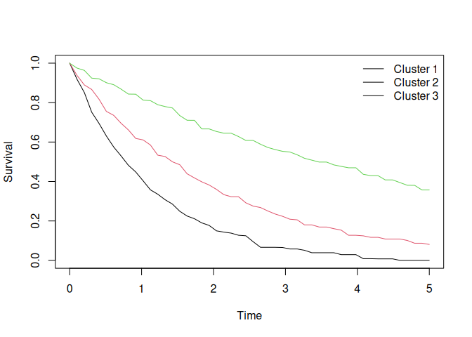

unsurv
unsurv provides tools for unsupervised clustering of individualized survival curves using a medoid-based (PAM) algorithm. It is designed for applications where each observation is represented by a full survival probability trajectory over time, such as:
- survival model predictions
- individualized survival curves from Cox or deep learning models
- dynamic risk trajectories
- multi-omics prognostic profiles
The package provides:
- Medoid-based clustering of survival curves
- Automatic selection of number of clusters via silhouette
- Support for weighted L1 and L2 distances
- Prediction of cluster membership for new curves
- Stability assessment via resampling and Adjusted Rand Index
- Comparison of a curve-based partition against baseline partitions (scalar risk, covariate PCA) using
unsurv_compare() - Visualization tools
Installation
From GitHub
install.packages("remotes")
remotes::install_github("ielbadisy/unsurv")From CRAN (after submission)
install.packages("unsurv")Overview
The core function is:
unsurv()which clusters survival curves represented as an n × m matrix:
- rows = individuals
- columns = survival probabilities at time points
Example: Clustering survival curves
library(unsurv)
set.seed(123)
n <- 100
Q <- 50
times <- seq(0, 5, length.out = Q)
rates <- c(0.2, 0.5, 0.9)
group <- sample(1:3, n, TRUE)
S <- sapply(times, function(t)
exp(-rates[group] * t)
)
S <- S + matrix(rnorm(n * Q, 0, 0.01), nrow = n)
S[S < 0] <- 0
S[S > 1] <- 1
fit <- unsurv(S, times, K = NULL, K_max = 6)
fit
#> unsurv (PAM) fit
#> K:3
#> distance:L2 silhouette_mean:0.915
#> n:100 Q:50Plot cluster medoids
plot(fit)
Each line represents the medoid survival curve for a cluster.
Predict cluster membership for new curves
predict(fit, S[1:5, ])
#> [1] 1 1 1 2 1Stability assessment
Cluster stability can be evaluated using resampling:
stab <- unsurv_stability(
S, times, fit,
B = 20,
frac = 0.7,
mode = "subsample"
)
stab$mean
#> [1] 0.9384743Higher values indicate more stable clustering.
Methodological details
Given survival curves:
the algorithm:
- Optionally enforces monotonicity
- Applies weighted feature transformation
- Computes pairwise distances (L1 or L2)
- Applies PAM clustering
- Selects optimal K via silhouette (if not specified)
Cluster medoids represent prototype survival profiles.
Typical workflow
fit <- unsurv(S, times)
clusters <- fit$clusters
pred <- predict(fit, new_S)
stab <- unsurv_stability(S, times, fit)Vignette
A full walkthrough (simulated mechanics plus the paper’s METABRIC worked example with deep-learning survival predictions) is available in the vignette:
vignette("unsurv-intro", package = "unsurv")Applications
unsurv is useful for:
- Patient stratification
- Risk phenotype discovery
- Prognostic subgroup identification
- Deep survival model interpretation
- Precision medicine
Relationship to other methods
Unlike clustering on covariates, unsurv clusters on the survival function itself, enabling:
- Direct interpretation of risk trajectories
- Robust clustering independent of feature space
- Model-agnostic analysis
Package structure
Core functions:
| Function | Description |
|---|---|
| unsurv | fit clustering model |
| predict | assign new curves |
| plot | visualize medoids |
| summary | summarize clustering |
| unsurv_stability | evaluate stability |
| unsurv_compare | compare partitions vs. outcomes |
| autoplot | ggplot visualization |
Citation
If you use unsurv, please cite:
citation("unsurv")
#> To cite package 'unsurv' in publications use:
#>
#> El Badisy I (2026). "unsurv: clustering individualized survival
#> curves." _Bioinformatics Advances_, *6*(1), vbag218.
#> doi:10.1093/bioadv/vbag218 <https://doi.org/10.1093/bioadv/vbag218>.
#>
#> A BibTeX entry for LaTeX users is
#>
#> @Article{,
#> title = {unsurv: clustering individualized survival curves},
#> author = {Imad {El Badisy}},
#> journal = {Bioinformatics Advances},
#> year = {2026},
#> volume = {6},
#> number = {1},
#> pages = {vbag218},
#> doi = {10.1093/bioadv/vbag218},
#> publisher = {Oxford University Press},
#> }